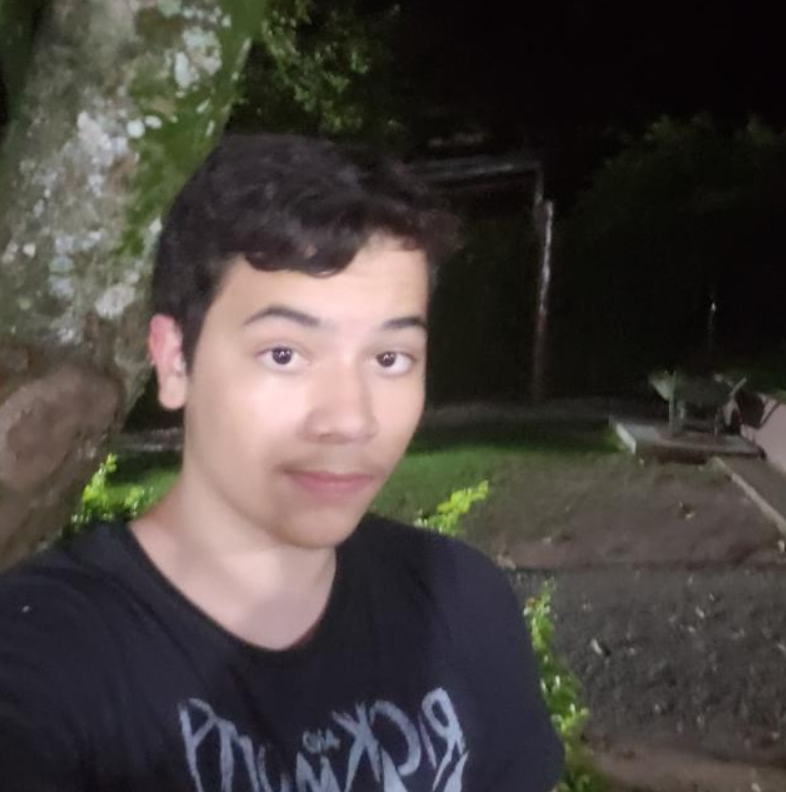
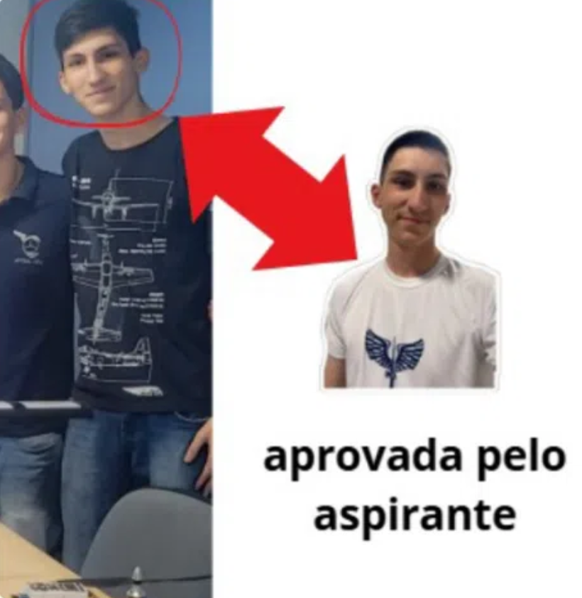

Currículo do Aluno 017 (Walter "Descobre Bixo" Costa Barreto)
O aluno menos padrão do Centro de Preparação de Oficiais da Reserva da Aeronática de São José dos Campos. VAMO COMPÊ!!!!

Grandes Feitos
Conheça as maiores realizações de Walter "Descobre" Costa
- Primeiro aluno da história a fazer o adaptador (Submisso) DESISTIR de tentar corrigir sua "marcha";
- Escapou para o RJ no seu dia de xerife;
- Foi chamado para substituir nosso grandioso xerife Agamenon após seu terrível desmaio;
- À pedido do companheiro de trás, teve o lugar trocado na entrada em forma, pois sua "marcha" estava, abre aspas, o confundindo, fecha aspas;
- Comandou o alto em nenhum pé cinco vezes seguidas.
Skills
Descubra (____) as maiores habilidades de Walter "017" Barreto
- É capaz de puxar, com naturalidade, a marcha (esquerda! esquerda! esquerda-direita!) com um intervalo temporal que representa uma curva senoidal perfeita;
- Consegue marchar como ninguém. Literalmente;
- Durante o deslocamento da aula de colóquios no Lacaz até o Rancho, ganha fôlego e querência infinita para marchar;
- Na hora de cobrir, imagina que está acariciando a cabeça do Milímetro imaginário à sua frente;
- Responde com incríveis 500+ de ping no "Olhar à direita!".

Curiosidades
Fique por dentro das novidades acerca de Walter "Costa" Descobre 017 "Bixo" Barreto!
- Quer saber as curiosidades? Descobre (____);